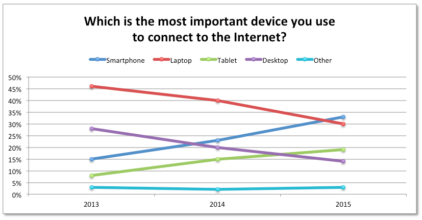

This is eight-week since I started to learn HTML5
and CSS3 and today I will cover flexbox - new
CSS3 box model and also I will review my own
website.
Flex layout is superficially similar to block layout. It lacks many of the more complex text- or
document-centric properties that can be used in block layouts, such as floats and columns. In
return,
it
gains simple and powerful tools for distributing space and aligning content in ways that web apps
and
complex web pages often need.
First of all from specification we can see that flexbox is a layout similar to block layout used
for
easy distribution of space and content alignment. At first, flex layout may seem too complicated, but
when you start to get using it, you will see that with this layout you can accomplish hard tasks
easy.
This picture illustrates flexbox container. The main axis - is the primary axis along which
flex items are layout. Flex items are placed in container starting at main
start
and
ending at the main end. The main size is flex item width or height. Cross
axis
is
axis perpendicular to the main axis. To declare element flex:
.container {display: flex;}
Now all direct children of .container will be flex items. You can specify a
flex-direction
default is row but can be a column and others. Also, flex-wrap which wraps items
if
needed. With justify-content, you can center element. And to see in practice how flex
layout looks and behaves check my guide page. Also, if you wish to
read
more about flexbox - check this website
css tricks or w3 specification.
As promised, I will do a review on my website development. First of all,
I started to write my website using
IntelliJ IDEA
ide for students. I choose this tool
because it
is the most advanced ide at this moment. It
is
easy
to use, has very nice code completion and much more. All the testing I did with Google Chrome latest
version.
Mainly because this browser is on all my devices. Second I started to develop my Learning Journal
for
mobile
devices
first, because of this book Learning
Responsive Web Design in which Clarissa Peterson suggested that is always better to design a
mobile
version of your website and then desktop, not another way. For this reason, I choose Apple iPhone 4 as
my
starting device with a screen width of 320px and scale factor = 1.0. Because I didn't want that my
website will be narrower than this width, I declared min-width of .wrapper to be 19rem,
which
is almost 326px. I don't have any iphone to test how my website looks, but lucky for me Chrome has
a nice
tool for this. To activate this feature:
Press right mouse button in the middle of the web page.
Choose "inspect element" from the menu.
Click on the mobile phone icon on the right-hand side of panel top left corner.
From left panel device drop down list choose Apple iPhone 4.
Nice thing about this feature that you can check how your website looks on different devices. Bad
thing
that it doesn't take account a browser of that device. So I made a header of
Learning
Journal and some articles. Later I added references at the bottom of my page.
Everything was good except
aside element with a menu, I couldn't fit on my mobile page. At first I though I
will
hide it and will be done with it, but that is a bad design decision because mobile users want the same
functionality as desktop users, and it is really annoying to scroll along the page looking for
something.
So I moved my menu to the end of page, just before footer and added a link to this
menu
in the header navigation. When I had a mobile version of my Learning Journal done, to make it responsive
to
other devices was a piece of cake. Little by little I increased the size of a page until I noticed that
page
doesn't look good anymore, then I took note of screen size in pixels, went to this website
px to em, converted pixels to ems, and created media query. In
which
I increased font size, or moved aside element on the side, or did something else.
Please note that
I did not target specific device width such as iPad or 1024px for laptops. I choose media queries
entry
point based on my own perception of a website, except iPhone 4, only because we have to start at
somewhere.
week 7 - flexible media
Published on
This week I have learned about flexible media, which includes images and video. But first I
would
like
to talk about some colour basics (rgba colour model and how to specify colour in CSS). Also, I will cover some tools which are very useful
for developing a website.
As we know everything what computers understand is 0's and 1's, because of that we have to have a
way
to represent things in the digital word. For characters, we have
ASCII or
UNICODE schemes which map every character as a number.
And it is not hard we take the letter 'J' and mapped it to '100 1010' in a binary or '74' in decimal.
But how to map a colour? How to represent a blue or orange color as a number? Well, we can do it
like we did with characters. We take any possible color and map it to specific number. The human eye
can
differentiate only about 10 million colours so there is no need to map all possible colors in the
universe.
And that's the good news, the bad news that we still need to represent 10 million colours.
The trichromatic theory says that we can
only
recognize three primary colors (red, green and blue). Every
other colour is a mixed of those three colors. So maybe we can use this principle to map all
10 million colours as a mix of red, blue and green. We know that with a byte we can represent 256
possible numeric values. So if take one byte to represent a red, one byte for
green and one byte for blue, we can have a combination of 256 x 256 x 256 = 16777216 ≈ 16.8
million
of possible colours. More than we need it.
In the last article, I covered how to represent any color as a mix of red, green and blue. This
color model is called
RGB color model. If we add extra opacity value, we will have
rgba color model.
If we want to specify a color for HTML5 element we can
do it
in CSS by providing values for red, green, blue and
optional
opacity. We can do it in decimal format, or in hexadecimal. The advantage of using hex format that
is
shorter and more readable. The disadvantage that we can't represent opacity. Another way to specify
a
color is to use color names. Here are some css examples:
/* Specifying color in rgba notation */body {background-color: rgba(128, 128, 128, 0.5);}/* Specifying color in hex notation */body {background-color: #808080;}/* Specifying colour with colour name */body {background-color: grey;
You often hear term "digital image", but what that means? It means that image is represented as
digits
(usually binary) opposed to paper image. It has two dimensions, which is a very fancy word for width
and
height. Also, there are two types of digital images:
raster image - which has fixed size of pixels. So if you increase the size of an image it
will
lose quality because a computer will take the best guest which pixel to insert in the image. The
advantage
of raster images that you can modify it very precisely, pixel by pixel.
vector image - doesn't have fixed size of pixels. The lines on an image are represented by
vectors,
because of this reason it can be scaled infinitely and will not loose quality. The bad side is
that
vector images are not so color detailed as raster (bitmap) images.
You can use both vector and raster images on your website. How to add an image you can read it
on my first-week post add an image.
I decided to write an extra article about tools which I used for creating this website.
Shadow generator - used this tool to generate a
shadow whenever I needed. It is easy to use a tool, you can choose shadow and background colors,
specify inset, even opacity. And you copy CSS code
just
with one click.
Palleton - used this tool for
creating a color palette for my website. It is a very sophisticated tool, has many options - you
can
choose a color by providing hex value or from a color wheel, get complementary adjacent and other
colors.
It is must have tool for web developers.
Gradient generator - for creating
gradients.
There are many gradient generators online, but I like this one for options which it provides. You
choose
from presets or you can create your own, change orientation with one click.
Online image editor - for editing images. Whenever I
wanted
fast edit an image - resize, add filters, change color or save an image for the web this is the best
tool.
For more sophisticated image adjustments I used Photoshop.
Pattern generator - for my guide page. It is easy to
use
tool. Choose from any supplied pattern and modify it the way you want it. All applied changes
you
can see in real time.
What
font -
Chrome extension for checking fonts. It is very useful tool to have, you can check any font on
the
web.
See what fonts professional sites are using and combine these ideas with your own.
Color eyedropper - Chrome extension for checking
colors
on websites. Sometimes you are surfing online and notice nice color, which you would like to
have
to yourself, this tool will help you to get a hex code for that color.
px to em - very useful tool for creating media queries.
week 6 - introduction to responsive web design
Published on
This week I learned about RWD - Responsive Web
Design,
more particularly why do we need it and about three main
RWD techniques.
So why we need RWD, wouldn't be easier just to create
websites which are fixed size and non-responsive? The answer is "yes" it would be easier, and
this
approach was the best for more than 20 years. The main issue with fixed layout is that it can't
accommodate increasing variety of mobile phones and tablets. And as you can see from the graph below
people
use more phones to connect to the Internet than laptops. Responsive web design provides
techniques
for designers to create a website which will look good on all these devices.

Which is the most important device you use to connect to the Internet. Original by
http://fortune.com/
Viewport attribute - first thing for RWD is to
include
viewport attribute for meta element in document's head
width=device-width - instructs browser to render viewport size to device-width. So that
mobile
browser will behave the same as desktop one. Width value can be specific pixel size like
width=600.
initial-scale=1" – tells the browser to render the webpage at full-size when it's
loaded,
rather than scaling it down. The maximum-scale, minimum-scale, and
user-scalable
properties control how users are allowed to zoom the page in or out.
The second thing is CSS media queries, which allow you to
apply
CSS rules specific to the width of the device. The query
can check
not just width, but height, orientation such as landscape or portrait, resolution and more. This
way
you have a lot of options to control how your website looks on a particular device. These queries
work very simple:
First they check how big the screen is.
And then they apply those CSS rules, which are for
that size of the screen.
Let's say I want my desktop version web page would have an aside element, but
I
don't
want it on mobile version, so my CSS would look
something
like this:
@media only screen and (max-width: 400px) {aside {display: none; }
}
@media - tells the browser that this is media query.
only - is for older browsers, which do not support media query.
only will hide this query from them.
screen - targets devices which have a screen.
and - logical AND operator which applies these rules only then left side of media query
(screen
only) and right hand side (max-width: 400px) are both true.,
max-width: 400px - targets devices with a width of 400px and less, that means
if
the screen is smaller than 400px it will hide aside element.
Note that on my web page I used little bit different media query. Instead of using
max-width I used min-width: 34rem, which applies rules
only
when
screen is equal or bigger than 34rem. Because I started to develop my website for mobile
devices
and then gradually increased size. It is easier to add content as screen size grows rather
shrink
it.
week 5 - CSS cascade and more
Published on
This week I learned about CSS cascade, box model, and
measurements. Also, I styled some HTML5 elements
body and header.
So what exactly is CSS cascade?
Every time when we write a CSS rule, that rule may be applied
not
just one HTML5 element, in fact, most of the time it
is
applied to many elements. Most important factor of deciding how rules are applied is selector's
specificity, it means that if a selector is more specific it overrides more general selector. If two
selectors are identical, then last defined in the stylesheet will take precedence. Of course, sometimes
you
want to break this rules, and you can do it with !important keyword after the value.
And this rule can not be overridden by any other rule.
CSS sees all elements as boxes. And all boxes have three
things:
border, margin and padding. The main thing which is in the middle of the box is an actual content,
it
can be text in h1 element link in
a element. Some boxes may not
have content or it may be not visible. Padding is a space which surrounds a content it may be zero
or as
much big as you want to be, after padding, comes a border and margin. Margin is a space between
other
elements in a page. By specifying margin and padding we can control how much empty space is on a
page.
Don't be afraid to put more space, it helps for readability as well as find things which is more
important.
CSS has many units of measurements some are relative (em,
rem,
%, ex..) and absolute (cm, mm, in, px..). We shouldn't use absolute units in
RWD so I will not mention them, except pixels (px).
% (percentage) - Defines a measurement as a percentage relative to another element,
usually, it is an enclosing element. Best usage is for layouts, on my site I used this element to
position
main and aside elements side by side so that
main
occupies 60% and aside - 40% space of enclosing
div. Also,
I used % do define root element's font size. So if
html element font-size
property is 100%, then real font-size is equal to default browser's font size which in most
cases
is 16px.
em - Defines a measurement relative to font size of that element. Let's say font size of
body is 16px, so 1em will be 16px, 2em-32px. And we don't have any problem
with
this unit until we start using this to define font size. Let's say a
body has
a font-size of 2em, and we want a
header to be twice as big as any element in the
body so the logic would suggest making header element
4em,
but that wouldn't be correct. Because
header element inherited font size of 2em,
from its enclosing
body element. And 4em relative to 2em altogether is 8em. The
Correct way would be to set up
header element to 2em, and it will have twice as
big font size as body element.
rem - Is very similar to em and defines a measurement relative to ROOT
element font size, which in html element. Because
rem is very flexible and
doesn't have pitfalls as em is a perfect for
RWD.
For this reason, I used this measurement extensively.
ex - Is a measurement relative to a font's x-height, which is the height of font's lowercase
letter
x. This is unit is not very popular, and I don't see any reason to use
ex instead of
em or rem.
px- It is the relative measurement to the resolution to the screen on the device. This unit
was
the most popular between web designers because it gave the most control of how a page will be
displayed
on screens. And it was ok for a decade because most devices had very similar pixel density.
Unfortunately
now new devices such as smartphones have four times bigger resolution than an old monitor. In other
words,
physical pixels became much smaller.
And that's the way it is not suitable for RWD.
week 4 - CSS basics
Published on
This week I started to learn
CSS. This includes syntax, selectors,
how to attach an external file to the
HTML5 document etc. I decided to go with the
minimalistic design. But to make it look good, I had to learn more about typographic and color
palettes. So let's get started.
It is always better to attach external style sheet rather embed a style in the
HTML5 markup. This will make maintenance of your
site
much easier.
You do this in the
head, with
link element. Attribute href points to a file with
CSS rules,
rel - specifies relationship between a document and a file which is attached to it, and
type - a type of file.
Every browser has their own way of displaying
HTML5 elements. Older one's may not even recognize
new
elements. And this is a problem, because even if you make your own stylesheet, different browsers
display it differently. The solution for this problem is to use reset or normalize
CSS.
Which is external first external stylesheet attached to the page.
Reset stylesheet removes all borders, margins from elements, makes some inline elements to be
block
etc. In other words, it resets all values of elements to zero and you start styling those
elements
as new. I used this -
reset.css
Normalize in other hand doesn't reset all default values. It fixes some bugs, especially with
new HTML5 elements. Personally, I prefer reset.css
rather normalize.css because it gives you more control over elements. You can find
here normalize.css
One disadvantage of putting all your styles in the external file is that it has to target
HTML5 elements. We doing that with selectors and the good
news is that CSS has plenty of selectors.
SELECTOR
MEANING
EXAMPLE
Universal Selector
Applies to all elements in a document
* {}
Type Selector
Matches element names
h1, h2 h3 {}
Class Selector
Matches an element whose class attribute has the same value
.example {}
ID Selector
Matches an element whose id attribute has the same value
#main_header {}
Child Selector
Matches an element that is a direct child of another
li > a {}
Descendant Selector
Matches an element that is a descendant of another specified
element (not just a direct child of that element)
p a {}
Adjacent Sibling Selector
Matches an element that is the next sibling of another
h1 + p {}
One of the most neglected thing in web design is typography. But what exactly that is? I always
thought
that is just about a font, but is not. It is more like an art of displaying text. It involves page
layout,
space between paragraphs, words, lines letters, margins, text formatting, text composition etc. Very
good resource of learning about all of this is Typography for Lawyers by Matthew
Butterick,
you can buy it at Amazon
Typography for Lawyers or read it online
http://practicaltypography.com.
Most important typography rules which I used on my Learning Journal are
Font size should be between 15-25px. I decided to go with responsive font size, for this reason,
I used em's measurements. Which is relative size to the browser default font size, which in most
cases are 16px. Usually, people small devices (phones, tablets) use not far away from their eyes,
that's way font can be smaller 15px, but when we increase device screen size the distance from their
eyes and screen increases as well, and we have to increase font size.
Very important measurement is line length. Which is character count including spaces on the line.
On average length should be between 45-90 characters. Of course, when developing sites, it would be
ridiculous to count every character when you make a change. The easiest way is to create two strings
45 and 90 characters long and see how they wrap on the line. To have even more control of line
length
you can set min and max values to the container, this way the length of the line will not be less than
45
and
more than 90.
Don't use default fonts such as Arial or Verdana as well as goofy looking fonts. It is good to use
them
for page titles, but not for main content unless you really want to scare your visitors that they
would not come back to your site again. The best option is to use professional looking fonts, but
of course, for most of them, you have to pay. The alternative would be to use
google fonts. For my journal, I decided to go with classic
looking
font EB Garamond which you can find at
EB Garamond . One disadvantage of using online font's that they have to be downloaded before
use
and that may slow down your site. Also don't use more than three fonts per site.
Don't be afraid of white space, letter spacing should be between 120-145% of font size, don't use
underlining, use bold or italic sparingly and there are much more recommendations for your text to
look professional. Again I recommend read this at
http://practicaltypography.com.
One good way of choosing fonts for your website is to check others people website. And if you using
Chrome you can download extension
what font which lets you find out what font is being used on the site.
week 3 - more html5 markup
Published on
This is the third week since I started to learn HTML5.
And I could say that I am getting a good grasp of it.
While my site still does not look very attractive and doesn't have a lot of content, but the
HTML5 code looks pretty good.
I finished reading all the chapters about
HTML5 in the
HTML & CSS: Design and Build Web Sites by Jon Duckett, which covered rest of
elements.
So this week I learned how to ...
Use the main and aside elements.
main element marks
main content of your page. Inside
main you can contain sectioning elements such as
article or section. Because every page has only one main content
you shouldn't use more than one main element in a page. On another hand
aside
is different. It can be used more than once. Although there are two ways of using it.
Outside main element - Is not relevant to the main content and mostly
represents
extra navigation, similar to the "sidebar".
Inside tje main element - Has to be relevant to the main content to which it points
to.
It can be extra information relative to the article which was not covered in the main article.
The difference between section and
article. At first impression, these elements
are very similar, but they are not interchangeable. The section is more general which represents
document's
section under a generic heading. Very good example is in newspapers under advertisement heading
where
we have different advertisements for cars. The section shouldn't
be used only for styling purposes, for that we have div element, also, a
section
should have a heading (for the difference between header and h1 -
h2 you can find on my previous post here). The
article is
a more specific type of
section element. On newspaper analogy advertisement for a specific car would
be an article. Always try to use more specific element article instead of
more general section whenever is possible.
Create tables using HTML5. For this we use
table
element. It contains tabe rows tr, which has table headings th
and table data td.
Heading 1
Heading 2
Heading 3
Item 1
Item 2
Item 3
Item 1
Item 2
Item 3
Read this article
The html5 <head>.
which clearly explains about the head element and it's attributes. Unlike other
HTML5 elements, a head is not
directly visible to the user, but that doesn't mean that is not important. The head
contains metadata about the document which is used by web browsers. Elements which you can find inside
head are -
title - Is page title. It is visible on top of browser window.
meta - Is page's metadata. It can contain these attributes (charset,
content, name, http-equiv,
scheme).
style - Defines CSS rules. Please note
that is always better to put all your
CSS to the external
document and link it with link element.
link - Is used for linking stylesheets.
script - To include javascript.
noscript - Useful if the browser doesn't support script or it is disabled.
base - Specifies base URL for all
relative URL's contained inside the document.
I didn't mention two important things. One of them is global lang attribute, which
is used to specify element's language. A good practice is to include this attribute inside
html
tag. Another thing is <!doctype html> declaration. Which is not an element,
but
an instruction for web browser about what version of HTML
page is written in. Declaration should be first thing in a document.
week 2 - marking up content in the learning journal
Published on
The second week was very busy for me. I bought a
HTML & CSS: Design and Build Web Sites book, by Jon Duckett
and read few chapters.
Managed to connect to my W:\ drive remotely.
Arranged my web site's files and folders, by creating a new folder for images in my Web$ workspace
on
the
University of Brighton server.
Also, at lab tutorial finished all exercises and ended up with a well marked up journal.
After the second week I learned how to do the following things:
Use HTML5 character entities references such as
&> or
< for marking up characters which have special
meaning in HTML5 such as “<”
or “>”.
You can do that by first specifying “&#” followed by Unicode code point in
hexadecimal or
decimal notation. Or “&” followed by the name. All entities must end with
semicolon “;”.
Character
Name
Hexadecimal
tab
	
	
<
<
<
>
>
>
“
"
"
#
#
#
&
&
&
;
;
�rb;
Add publication date to my posts using time element with
datetime attribute. Date can be a year, month, day, hour, timezone or mix of all.
Correctly use text-level semantics i, b, em,
strong, small, abbr, mark
elements. Which can be very confusing at first sight.
i - represents a text which has an alternate voice or mood. Something that is
different in some
kind of way, like translated foreign word, musical notation or voice-over.
It is a good practice to include
class attribute explaining what is exactly different
(alternate voice).
b - represents a text which should be marked different from the text, but without
any
emphasis or
alternate voice, such as abstract keywords or product names in a review. In other words, if you
want
to make text look different. Use this if there is no better substitute for marking up such as
h1 for headings, var for mathematical variables. Also, when
using
b
is good practice to include a class attribute to indicate why the
b element is being used.
em - represents emphasis of its content. It's used mostly for change the
meaning of
the
sentence. Note that
em shouldn't convey an importance, for that we have the
strong element, also, it shouldn't be used for just
italic text.
strong - is used to represent strong importance, like a warning or caution.
small - for small print, such as disclaimers, legal restrictions or
copyright. It
shouldn't be used for subheadings or extended text such as a paragraph. Also strangely, but
small don't de-emphasize the importance of the text.
abbr - used to mark up abbreviation or acronym.
title specifies
full acronym or abbreviation. Try
HTML5 abbreviation
(hover on word “HTML5” to see an effect).
mark - used to mark a text in one context which is relevant in another
context
for reference purpose. It is similar to when you read a book, you're highlighting a text, so
that
when you take the
same book again you can easily identify important things which you highlighted before.
Include ordered, unordered and definition lists, using ol, ul and
dl. The difference
between ordered and unordered list is that ordered list is used for things which can be ordered and
by
default browser will use digits to show order. But you can change that with
CSS3.
A list item is marked up within a
li element. A definition list is mostly used for listing some terms
followed by a description. dt stands for definition term and
dd - definition description.
Ordered List
List Item 1
List Item 2
List Item 3
Unordered List
List Item 1
List Item 2
List Item 3
Definition List
List Item 1
This is short description for List Item 1
List Item 2
This is short description for List Item 2
List Item 3
This is short description for List Item 3
Week 1 - Getting Started
Published on
I had some experience with
HTML
before this course, that is way first week lab tutorial was not very hard to follow.
I ended up with a 2-page 'website'. Even it uses latest
HTML5 tags such as
article or
header
it does not look very appealing. In fact, it looks very old.
But I have no doubt that my web site's appearance will improve in following weeks,
and especially when I start to learn
CSS3.
So to sum up in this week, I learned how to do the following things:
Validate HTML5
using the W3C validator.
Which you can find
here. This is the first thing which you have to do after
creating your
HTML5 document. Validator will check your document
syntax errors. Event browsers can render non-valid HTML5
documents is very good practice to do so. Because when a browser meets some unusual construct, it
will
make
a guess how this supposed to be shown and the result might be not what you intended. At
validator page you can specify an URI, upload a
file or just copy and paste your
HTML5 code.
Create links to external websites with a anchor using absolute links. To do that
you
have to specify and address using href attribute.
href value is the address of the site which
you are pointing your link at. Between
a opening and closing tags goes a text which you click on
as
HTML5 Doctor. If you have a bunch of links grouped together in
the
same
element especially for main sites navigation, you can use
nav tag, which stands for navigation.
To create a link pointing to the different page of your website you can use relative or absolute
links.
The difference between
them is not visible to the user and both can point to the same page. The advantage of using
relative links is that it is easier to maintain. Let's say you decided to change your domain
address.
With
absolute links you will have to go through all your links and change them individually, with
relative -
not.
To point to the different position within a page you do the same thing as with pointing to a
different website using a with href attribute. The difference is that
href will contain
“#” followed by element address specified by the
id attribute which has to be unique for
the page. That means that same id can't point to different elements.
Try go to top of the page.
<!-- Using absolute link --><ahref="http://example.com">example</a><!-- Using relative link --><ahref="index.html">home</a><!-- Pointing to same page --><ahref="#top">got to top</a><!-- Pointing to relative link's bottom --><ahref="index.html#bottom">Home footer</a>
Correctly use
header and headings from
h1 to h6.
header - is used to represent section header and can contain headings,
navigation
menu,
logos, tables etc. Important to note, that
header doesn't introduce a new section, but is a head of a section. If a header
contains only
a heading h1 - h6, than
header shouldn't be used.
h1 - h6 - represents section headings and have a rank,
represented
by number in their name. Starting from highest - 1 and smallest - 6.
h1 is used for main page heading,
h2 for section heading and so on. Important thing to
remember is not to use h1 -
h6 for subheadings or subtitles.
Structure paragraphs with
p. This element is used for grouping content. p is more general
grouping element, and shouldn't be used for lists or quotes. By default browser will insert a blank
line
between
paragraphs, but you can change that behaviour with CSS3
To separate content, even more, you can insert
hr (paragraph-level break). Which is used to separate paragraphs in an
article or a
section. hr shouldn't be used to separate sectioning
elements such as main,
section or
article. If you just want for the element to start in a new line, then use break
br.
Add image to HTML5 website using
figure and
img tags. Most important things to remember when adding an image to your website is
to
not forget figure element which may contain any kind of figure (diagram,
illustration,
chart, photo). To contain images in the figure you use img tag with
attributes like alt, which value will be used to display a
text, if the browser will fail to load an image. And the last thing to remember is to
include
figcaption which can be a short description for an image or author's details.
Open image in a new tab using _blank value for
target attribute in an
a element. Without
target attribute, link will be opened in the same browser
window. It is useful if you have an image in your website which is not high resolution, but you
want to
provide bigger resolution. Try it yourself, if you click
this link,
browser will open it in a new tab.
asdfasdf a
<figure><ahref="image.html"target="_blank"><imgsrc="images/image.png"alt="text to display" /></a><figcaption>Image description</figcaption></figure>